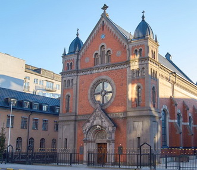
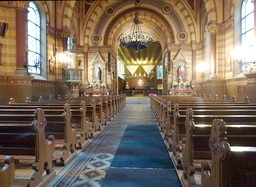
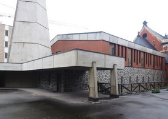
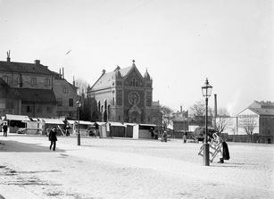
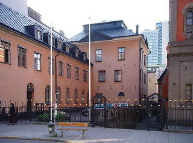
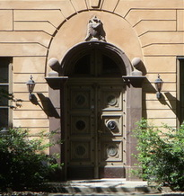
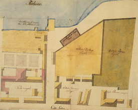
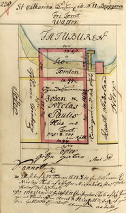

|
Wikipedia
Också känd som Stockholms katolska domkyrka, belägen i kvarteret Nattugglan vid Folkungagatan 46 på Södermalm i Stockholm, är Stockholms katolska stifts och därmed hela romersk-katolska Sveriges katedral.
År 1857 förvärvade Katolska församlingen i Stockholm Paulis malmgård. Malmgården bestod då av huvudbyggnad med två flygelbyggnader och en trädgård. I den numera rivna norra flygeln inrättades 1860 den äldsta kyrkan, Sankt Eriks katolska kapell. Öster om kyrkan finns delar av Paulis malmgård fortfarande bevarade, där man har expedition, prästboställe och skola.
|
Nuvarande kyrkobyggnad i kvarteret Nattugglan kom till på initiativ av den apostoliska vikarien Albert Bitter och uppfördes mellan 1890 och 1892 efter ritningar av arkitekt Axel Gillberg (1861-1915). Den hade föregåtts av ett förslag i samma kvarter om götiskt kapell med hög tornspira ritad av Magnus Isæus och Carl Sandahl, vilket till följd av de dåliga grundförhållandena på platsen fick överges. Istället utformade Gillberg, som varit biträde hos Isæus och Sandahl, ett nytt mer modest förslag. Han gestaltade kyrkan i nyromansk rundbågestil, med rött klinkertegel och grå puts. Basilikan är grundformen. Huvudfasaden mot Folkungagatan domineras av ett stort rosettfönster och kröns av ett kors som flankeras av två låga torn. Ursprungligen fanns ett fasadur på norra fasaden. Kyrkan fick en längd på 70 fot (cirka 21 m), bredd 40 fot (cirka 12 m) och höjd 41 fot (cirka 12,3 m) och rymde ursprungligen 117 personer. |
 |
|
 |
Nya delen
Den 25 mars 1983 invigdes tillbyggnaden av kyrkan mot syd då ett nytt kyrkorum med kor tillades genom en genombrytning i det gamla koret. Arkitekt var Hans Westman med dotter Ylva Lenormand från Westman-ateljéerna i Malmö. Altaret flyttades till den nya delen. Lösningen är ovanlig eftersom man inte kan se altaret från huvudingången i kyrkans gamla del, och eftersom den nya delen är mycket större än den gamla vilket skänker denna en karaktär av genomgångsrum. En 27 meter hög klockstapel utförd i betongelement uppfördes intill nybyggnadens södra sida. Klockstapelns tornspira avslutas med en krona av koppar runt S:t Eriks martyrsvärd som kors.
Under den nya kyrkodelen anordnades en samlingssal avsedd för församlingsfester, konserter, föredrag, kyrkkaffe och liknande. Efter ombyggnaden har kyrkan plats för 600 personer, varav 350 i den nya kyrkodelen. Tillbyggnadens huvudentreprenör var Viktor Hanson. Bygget kostade drygt 24 miljoner kronor som var gåvor från församlingen, stiftets katoliker och, till största delen, från katolska församlingar i Västtyskland.
Kyrkan blev katolsk domkyrka vid inrättandet av Stockholms katolska stift 1953, efter ökad religionsfrihet i Sverige. Den tillhör Sankt Eriks katolska församling som har cirka 8 500 medlemmar.
Stockholms katolska stift, som omfattar hela Sverige, hade år 2011 cirka 100 600 registrerade medlemmar och är därmed en av Sveriges största kyrkor. Eftersom stiftet är mångkulturellt, hålls mässor varje vecka på fem språk och regelbundet på ytterligare tre. Domkyrkans skyddshelgon är Sankt Erik, Stockholms skyddspatron och Sveriges kung 1150–1160. År 1998 fick stiftet sin förste biskop av svensk börd sedan reformationen, Anders Arborelius. Kyrkans invigningsdag firas den 18 januari.
|
|
Katolska kyrkans webplats, katolskadomkyrkan.se Sammanställt av Johannes F. Koch. Reviderat 2006-11-16 Gun Wanders 200 - årsjubileum När vår nya domkyrka konsekrerades bildade detta också upptakten till ett jubileumsfirande av vår kyrkas verksamhet i Sverige efter reformationen. 1783 anlände den franske abben Nicolaus Oster till Sverige. Denne utnämndes av påven Pius VI till apostolisk vikarie över Sverige, vilket innebar att han fick en biskops fullmakter. Därmed återupprättades den katolska kyrkan i Sverige. Bakgrunden var att Gustav III 1781 utfärdat det s.k. toleransediktet som gav de utländska katoliker som bodde i Sverige och inte sällan var i kungens tjänst - tillstånd att ha egna kyrkor, fira gudstjänst och ge sina barn katolsk uppfostran. Förbudet för svenskar att övergå till den katolska tron skulle dock gälla ännu cirka 100 år. Redan 1784 bildades en katolsk församling i Stockholm. Påskdagen den 4 april invigdes t.o.m. en katolsk kyrka, Helgeandskyrkan. Det var nu inte så imponerande som det låter; församlingen hade helt enkelt fått hyra frimuraresalen i nuvarande Stadsmuseum. Denna lokal förblev kyrka fram till 1837. Med drottning Josefina, Oscar I:s katolska gemål, fick katolska kyrkan i Sverige värdefull hjälp. Drottningens kaplan Studach blev t.o.m. biskopsvigd, men framför allt igångsattes byggandet av S:ta Eugenia, kyrkan på Norrmalm. Denna kyrka togs i bruk 1837 och revs i den stora cityombyggnaden på 1960-talet.
|
 |
|
 Katolska kyrkan 1900 |
1857 kunde katolska församlingen i Stockholm förvärva den s.k. Pauliska malmgården på Södermalm, dvs. den fastighet vari domkyrkoförsamlingen i dag har bostäder, undervisnings och samlingslokaler och som haft en central roll under gångna decennier. Redan 1795 hade katolska skolan inrättas vid Nytorget på Söder. 1859 flyttades skolan till Pauliska malmgården där den låg kvar till 1967 då nya, mer ändamålsenliga lokaler i Enskede togs i bruk. 1886 hette den apostoliske vikarien för Sverige Albert Bitter. Under hans tid tillkom S:t Eriks katolska kyrka på Söder, dvs. den kyrkobyggnad som invigdes 1892 och som sammanbyggts med en helt ny kyrkodel 1983.
|
|
30 - årsjubileum 1953 upphöjdes S:t Eriks katolska kyrka till domkyrka (katedral). Skälet var att katolska kyrkan i Sverige, enligt påvligt beslut, den 29 juni 1953 blev ett eget stift med egen biskop Johannes Ev. Erik Müller - vars biskopsstol (chatedra) fick sin plats i kyrkans kor, höger om altaret. När monsignore Johannes F. Koch år 1962 flyttade från Malmö till domprostuppgiften i Stockholm insåg han genast att man måste ta itu med kyrkans och församlingslokalernas utvidgning, skolans utplacering och modernisering och även sammanförandet av katedralen och stiftsförvaltningen. Katolikernas antal i Sverige hade under 1800-talet ökat tämligen långsamt; den s.k. dissenterlagen av år 1860 - som tillät även svenskar att vara katoliker - innebar ingen stor anslutning. En klimatförändring kom efter l:a världskriget då en första konversionsvåg kunde registeras. Med rätt stora flyktingskaror efter 2:a världskriget och 60-talets stora invandring ökade katolikernas antal väsentligt - och därmed växte behovet av kyrkor, församlingslokaler och bostäder för präster och ordenssystrar. Det gällde inte minst för domkyrkoförsamlingen. Något av svårigheterna kanske kan antydas genom det faktum att domkyrkoförsamlingen i Stockholm på 1960-talet också omfattade Södertälje, Nyköping och Gotland! När biskop Hubertus Brandenburg installerades i februari 1978 fick vi låna Katarina kyrka på Söder - när hans företrädare i ämbetet, John Taylor, skulle biskopsvigas 1962 fick vi hyra Blå hallen i Stadshuset. Men sedan reformationen har katolska kyrkan i Sverige varit van vid primitiva, enkla förhållanden och provisoriska lösningar och därför haft stort behov av uppfinningsrikedom, fantasi och gästfrihet. Fantasi har inte minst varit av nöden under den långa planerings och byggnationsperioden för tillbygnaden av kyrkan. Arbetet intensifierades 1976. Bostäder för präster och systrar, pastorsexpedition och församlingslokaler renoverades, byggdes om och byggdes till. Småningom fick församlingen för 1,25 miljoner kr köpa tillbaka en markremsa som tidigare exproprierats inför byggandet av Söderleden. Därmed - och äntligen - kunde planerna på en ny kyrka ta form - en form som delvis kom att styras av vår gamla kyrka, K-märkt på 60-talet. Man kan - om man så vill se detta som ett yttre tecken på kyrkans tradition och förnyelse.
Ryssen och Götgatshuset Lindqvist, Barbro Församlingsblad nr 2 1983 På det första pastoralrådsmötet i Stockholms katolska stift1982 uttrycktes det önskemål om att lekmännen skulle få bättre skolning och att katolska präster skulle delvis utbildas i Sverige. De önskemålen är inte nya. För 125 år sedan ledde de till att ett hus inköptes på Söder i Stockholm. Det huset blev kärnan i det katolska stiftscentrum som nu håller på att färdigställas och som kommer att invigas i vår (1983). En ung rysk adelsman med ett brokigt levnadsöde var den egentlige påskyndaren av husköpet på Söder. Han hette Stepan Stepanovitj Dzunkovskij, var ursprungligen grekisk-ortodox, men hade konverterat i Rom och blivit katolsk präst. Sökande efter ett verksamhetsfält gjorde han i mitten av 1850-talet en rekognoseringsresa upp till norska Finnmarken. Under ett uppehåll i Stockholm ledde han en bönevecka i den katolska församlingen. Den lille satte prästen med mongoliskt utseende, gul ansiktsfärg och djupt liggande ögon var till det yttre inte någon tilldragande person. Men han var kultiverad och gjorde intryck på församlingens damer. En av dessa, den engelskfödda madame Elisabeth Mary de Champs, blev hans andliga dotter. Efter sin avresa från Sverige gav han henne i brev på brev råd och anvisningar som gällde också den katolska verksamheten i stort. Dzunkovskij tyckte sig ha förstått att det behövdes ett katolskt prästseminarium i Skandinavien. Han uppmanade madame de Champs - förmögen änka - att inköpa ett hus i Stockholm som kunde vara lämpligt som skola och seminarium. Där skulle hon tillsammans med honom ägna sig åt utbildning av präster för missionen i Norden. Den ryske prästens inflytande över madame de Champs upprörde de katolska prästerna i Stockholm. De förhindrade att hon satte hans planer i verket. Dzunkovskijs idéer låg emellertid i linje med vad den apostoliske vikarien, Laurentius Studach, själv länge gått och tänkt på. Han hade 20 år tidigare åstadkommit att katolikerna i Stockholm fatt en egen kyrka, katekes och bönbok på svenska samt dugliga lärarkrafter. Nu framstod inrättandet av ett prästseminarium i Sverige som den mest angelägna uppgiften. Över huvud taget låg församlingsmedlemmarnas trosundervisning, Studach varmt om hjärtat. Ända sedan början av 1800-talet hade den katolska församlingen drivit en liten skola i Stockholm. Då det 1842 blev lag på att det i varje församling i Sverige skulle finnas en folkskola, växte skolornas antal. Många katolska föräldrar frestades att låta sina barn gå i närmast belägna skola, även om Luthers katekes där var ett viktigt lärdomsstoff. Katolskt uppfostrade barn hade f.ö. sämre framtidsutsikter än de lutherska: de kunde inte bli ämbetsmän, lärare eller läkare. Studach klagade: ”...alla katolska utlänningar, som kommer till det här landet och förtjänar ihop en liten förmögenhet, fransmän, italienare, tyskar etc, uppfostrar sina barn i statens religion under förevändning att de inte vill förstöra sina barns timliga framtid”. Han såg en god katolsk skola som enda räddningen. Utan en sådan skulle det inte komma att finnas medvetet övertygade katoliker i Sverige och inte heller några konvertiter. Och för myndigheterna skulle det inte finnas någon anledning att ändra de orättvisa lagbestämmelser som han kämpade för att få upphävda. Lika viktigt var det, menade Studach, att sörja för att de som skulle verka som katolska präster i Sverige förbereddes för sin uppgift här i landet. Visst hade en del utländska präster förklarat sig villiga att tjänstgöra i Skandinavien. Men när de väl anlänt hade de stannat endast kort tid: en fransman några dagar, en tysk tre veckor, en holländare ett år. Klimatet, språket, församlingens fattiga förhållanden hade överraskat nykomlingarna och de hade inte kunnat anpassa sig. Att sända fromma och begåvade svenskfödda katolska pojkar till utländska läroanstalter hade inte givit något resultat för församlingens vidkommande. Få av dem hade läst teologi och endast en av dem hade velat återvända för att verka som katolsk präst i sitt hemland. Studach gav Dzunkovskij rätt: prästkandidaterna borde så långt möjligt få göra sina studier i Sverige. Bättre förekomma än förekommas. Den ivrige ryssens långt framskridna planer på ett prästseminarium fick Studach att göra den första nödvändiga investeringen. För 75 000 riksdaler köpte han år 1857 en egendom på söder i Stockholm. Dess huvudbyggnad utgjordes av ett trevånings stenhus, uppfört 1776, som omgavs av en stor trädgård och låga hus längs Götgatan. Pengar för projektet insamlades utomlands och 1861 kunde seminariets verksamhet börja. Det skedde genom att den skola - ”Katholska församlingens Uppfostringsanstalt för Gossar’ - som hittills varit inrymd i ett hus vid kyrkan på Norra Smedjegatan flyttades till de nya. större lokalerna vid Götgatan där både skolan och skolhemmet kunde utvidgas. Den bayerske prästen Johann Georg Huber som redan tidigare förestått skolan, blev seminariets rektor. Studach såg med tillförsikt mot framtiden och rapporterade 1865 till Rom: ”Särskild glädje bereder mig det framgångsrika gosshemmet under den kände, förträfflige abbé Hubers ledning”. Drömmen om ett prästseminarium var delvis uppfylld. Åter till Söder I Stockholm var Huber rektor för pojkskolan tills han efter Studachs död blev apostolisk vikarie. Huber ville ogärna lämna sin skola och bodde kvar i skolhuset vid Götgatan 46. Också hans efterträdare, biskoparna Albert Bitter och Johannes Erik Muller, använde det som sin bostad. Så kom 1700-talsbyggnaden att bli kallad Biskopshuset. Att skolan blev biskopshus innebar inte att skolverksamheten upphörde. Tvärtom utvidgades den genom att tillbyggnader skedde och också flickor fick tillträde till skolan, senare benämnd S:t Eriks skola. Sedan skolsystrar börjat delta i undervisningen flyttades skolan 1967 till egna lokaler i Enskede. Veterligt blev ingen av skolans elever katolsk präst. Huber hade visserligen glädjen se en av sina elever Josef Popp, som förste svensk bli prästvigd i Stockholm 1864, men denne fullgjorde hela sin studietid utomlands. Därefter dröjde det länge innan någon svensk blev katolsk präst. De som blev det var nästan alla konvertiter som haft sin skolgång och sina teologistudier förlagda på annan ort. Något verkligt prästseminarium blev skolan på Söder aldrig. I 1700-talshuset fanns sedan 1860 ett kapell. Det blev gudstjänstlokal för katoliker på Södermalm, som 1892 fick en egen kyrka genom att S:t Eriks kyrka då stod färdig intill huset. När det apostoliska vikariatet 1953 upphöjdes till självständigt stift blev den kyrkan domkyrka. Nu har kyrkorummet utbyggts. Samtidigt som biskopen och hans kansli - efter tjugo års bortovaro - återvänder till Biskopshusets närhet. Kvarteret med det av Studach inköpta huset blir på nytt en centralpunkt för kyrkans verksamhet i vårt land. Skolfunktionen dominerar inte längre. Men invigningen av stiftscentret sker just när behovet av mer utbildning och ökat trosmedvetande åter betonas. Den ”hemmabas”, som nu efterlyses, strävade redan Studach och hans samtida efter att upprätta. Kommer deras drömmar att nu förverkligas, om inte på Söder så någon annanstans? |
|
Paulis malmgård
Wikipedia
 |
Paulis malmgård (även kallat Niclas Paulis hus) var en malmgård belägen i kvarteret Bryggaren (nuvarande kvarteret Nattugglan) på Södermalm i Stockholm i hörnet Folkungagatan/Götgatan. Byggnaden uppfördes på 1680-talet på uppdrag av Niclas Pauli. En liten del av den tidigare egendomen finns kvar, men är idag helt kringbyggd av nyare fastigheter. Den ägs i dag av Stockholms katolska stift. Inne på bakgården intill Stockholms katolska domkyrkan och sedd från Folkungagatan syns malmgårdens väldiga huvudbyggnad från 1600-talets slut, som numera ingår i kyrkans verksamhet och inrymmer församlingshemmet samt kontor. Gårdens vackra 1600-talsport mot öster finns alltjämt bevarad. Byggnaden är blåklassad av Stockholms stadsmuseum vilket innebär att bebyggelsens kulturhistoriska |
 värde av stadsmuseet anses motsvara fordringarna för byggnadsminnen i Kulturmiljölagen. |
|
Då malmgården byggdes fanns här sjön Fatburen och egendomen var alltså en strandtomt vid Fatburens östra sida. Den förste som byggde här var postmästaren och hovrådet Johan von Beijer, på hans tid var Fatburen fortfarande en frisk och fiskrik insjö som upptog Södermalms centrala delar. Gården hade då namnet Beijerska malmgården och byggdes med start 1654. von Beijer köpte samma år även en betydligt större tomt längre ned på andra sidan Götgatan som efter honom kallades "Beijerska trädgården, i vars bortersta del han började bygga ett stenhus. Bygget synes ha dragit ut på tiden och fullbordades först av postmästarens barn. Innan gatan breddades och sänktes till nuvarande nivå kallades detta gatparti "Postmästarbacken". Beijerska trädgården blev i början av 1900-talet uppdelad i flera mindre kvarter. När häxprocesserna grasserade som värst i Stockholm 1676, var det de stackars Beijerska arvingarnas trädgård som folkfantasin utpekade som den plats dit häxorna förde de sovande barnen och där häxorna förlustade sig med djävulen. Beijerska malmgården vid Fatburssjön köptes 1678 av Niclas Pauli, invandrare från Schleswig. Pauli höll på med färgeri och ylleväveri och under 1680-talet lät han uppföra byggnaderna som delvis ännu finns kvar. Efter Niclas Paulis död 1710 övertog sonen Christopher Pauli gården och rörelsen, efter honom följde Christophers söner Johan och Nicolaus. Nicolaus Petri blev en förmögen man, han byggde ut egendomen. Hans son Niclas junior köpte gården 1776 och förskönade den ytterligare både in- och utvändigt.
|

|
|
Genom giftermål med Lovisa Frederika Wertmüller, som var syster till målaren Adolf Ulrik Wertmüller kom Niclas Pauli i kontakt med Johan Tobias Sergel, som bidrog till att försköna Paulis hem. Bland annat skapades en sal med målade rokokotapeter, vackra dörröverstycken och kakelugnar i gustaviansk stil. År 1796 var Niclas Pauli tvungen att sälja malmgården och 1799 gick han i konkurs. Efter Pauli kom och gick många olika ägare, medan själva gården förblev ganska oförändrad. I och med att Fatburen fylldes igen försvann strandtomten. År 1857 förvärvade Katolska församlingen i Stockholm fastigheten. Malmgården bestod då av huvudbyggnad med två flygelbyggnader och en trädgård. År 1864 byggdes ett stort hyreshus mot Götgatan, som 1932 ersattes av den byggnad som nu finns på platsen. Det är Katolska församlingens bostadshus som ritades 1929 av Paul Hedqvist. På malmgårdens tidigare trädgårdstomt uppfördes 1892 Stockholms Katolska Domkyrka, därigenom klämdes Paulis malmgård mellan två fastigheter. Enligt en inventering som Stockholms stadsmuseum utförde 1977 framgår att "...huset ändå är ett representativt stycke karolinsk arkitektur och att den anrika 1700-talsinredningen är väl bevarad." Eftersom Paulinska malmgårdens huvudfasad är dold bakom Götgatans bebyggelse existerar inga nyare fotografier som visar hela fasaden. I början av 1930-talet fanns dock ett fototillfälle då hela malmgårdens östra fasad blev synligt, när ett äldre bostadshus mot Götgatan hade rivits och innan nybyggnaden Nattugglan 19 där restes. |
 Niclas Paulis tomt 1739 |
|
Ur Birgit Lindberg: Malmgårdarna i Stockholm, Liber 1985
Paulis malmgård
För att hitta Stockholms smultronställen måste man känna till
dem. Veta var de döljer sig. Så ock med Paulis malmgård.
Adressen är hörnet Götgatan - Folkungagatan. Går man in i
porten Götgatan 58 A ser man bara den vackra 1600-talsporten
och husets östra fasad, men för att komma in får man gå till
kyrkan på Folkungagatan. Det är Stockholms Katolska Domkyrka som i dag äger och förvaltar den gamla ärevördiga gården, vars anor går tillbaka till år 1654.
Det året byggde nämligen rikspostmästaren och hovrådet
Johan von Beijer sin malmgård (av tegel från Farsta, Gustavsberg) vid östra stranden av Fatburssjön, som då ännu var en fin
fiskrik insjö. Så småningom blev den ett osunt träskområde, där
sjukdomarna härjade bland människorna som bodde vid stränderna, för att år 1860 fyllas igen och bli stationsområde. Det
området skall nu bebyggas.
Postmästare Beijer byggde sin karolinska gård med säteritak
och ordnade även en holländsk terrasserad park mot Fatburssjön. Det var inte bara glädje med hans fina plantering, för
under de stora häxprocessernas tid 1674-76 förlade folkmeningen häxornas Blåkulla till hans trädgård.
Det var denna gård som invandraren från Schleswig, Niclas
Pauli, köpte år 1678. Redan år 1676 var han här i full verksam-
het med sin raspfabrik, där olika material sönderfördelades till
färgstoffer.
Denna utökades senare med både färgeri och ylleväveri.
Under 1680-talet byggde han den gård som ännu finns kvar.
Sonen Christopher Pauli övertar gården vid faderns död
1710. Han utökade också rörelsen med väveri för silkesstrumpor. Redan på 1710-talet flyttar han dock in till "staden" till det
Gyllenhielmska huset, och sönerna i hans första äktenskap med
Sarah Bedoire, Johan och Nicolaus, får år 1726 överta gården.
Genom köp och byte utökar de gårdens ägor ytterligare.
Johan Pauli, som var släktens huvudman, tycks dock inte ha
varit lika skicklig i affärer som sin far och farfar. Han kom på
obestånd och hade trassliga affärer vid sin död år 1774.
Brodern Nicolaus däremot, som avled 1781, var en förmögen
man. Vid det laget - år 1776 - hade Nicolaus' son Niclas Jr köpt
gården av sina föräldrar. Nu börjar en ny storhetstid och den
har vi ännu minnen av: Gården utökas med ett stenhus åt
Götgatan och ytterligare några smärre byggnader. (Tidigare
under 1700-talet har de båda flyglarna på huvudbyggnadens
östra fasad tillkommit.)
|
Det är inte bara det yttre som förskönas utan även det inre av huset. Bl a tillkommer en sal med elegant målåde rokokotapeter, vackra dörröverstycken och kakelugn i gustaviansk stil. Om själva gårdens yttre och inre förskönades, så skedde inte så med omgivningarna. Vi skulle kalla det för miljöförstöring på högsta nivå. Avfallet från alla de verkstäder, som de olika Pauli startade, förorenade sjövattnet. Utöver Paulis anläggningar fanns också bryggeri och slakteri vid Fatburssjöns strand. Inte nog med detta - flera av stadens "flugmöten" (dvs avskrädes- högar) fanns vid Fatburssjön. En av dessa "reservoirer" låg vid Fatbursgatan, där flera av Paulis arbetare bodde. Detta ledde till omfattande sjukdomar och stor dödlighet. Niclas Pauli var gift med Lovisa Fredrika Wertmuller, syster till den kände målaren Adolf Ulrik-Vertmuller. Därigenom blev han god vän med många andra konstnärer, bl a Johan Tobias Sergel, så det kanske inte var så konstigt att hans hem förskönades. Pengar fattades inte heller, då alla hans omfattande affärer blomstrade. Tyvärr tog allt detta slut och genom oförståndiga spekulationer tvingades han dels sälja malmgården år 1796, dels gå i konkurs år 1799. Den som köper gården av Niclas Pauli 1796 är kungl sekrete- raren Carl Wilhelm Salonius, men han säljer den redan 1797 till hovjuveleraren Bengt Sander. Åren 1814-47 tillhör den brygga- ren Johan Daniel Rosenblad. Gården vandrar sedan till en brukspatron J Sjökvist 1847 och till byggmästare E O Åkerlund och bankkamrer C Huldt år 1856. Denne säljer egendomen redan 1857 till Katolska församlingen i Stockholm. Några stora förändringar har inte skett på gården mellan åren 1796 och 1864. Då byggs ett nytt stort hyreshus mot Götgatan och 1932 ersätts detta hus med det som nu finns på platsen. 1892 byggdes på malmgårdstomten Stockholms Katolska Domkyrka (S:t Erik). Mycket av den ursprungliga inredningen finns kvar i den Pauliska malmgården i dag, men mycket har också försvunnit. Kvar finns ankarjärn; dörrar, fönsterkarmar från 1600-talet, målade dörröverstycken, tre kakelugnar från 1700-talet och mycket annat. Stadsmuséet gjorde en inventering 1977 och av den framgår att "huset ändå är ett representativt stycke karolinsk arkitektur och att den rika 1700-talsinredningen är väl bevarad". De omdaningar som skett under århundraden har alltså skett varsamt, däremot inte den senaste ombyggnaden 1977-79. I en proseminarieuppsats 1980 av Birgitta Strömberg-Levin och P-O Svennerholm vid Stockholms universitet kan man läsa följande: - "De vidtagna ombyggnadsåtgärderna har varit såväl talrika som ingripande. De har också präglats av en okänslighet som varit mycket påfallande. Såväl formspråk som färgsättning har varit utpräglat modernistiska och utan känsla både för den kulturhistoriskt värdefulla malmgårdsbyggnaden och för nutida restaureringsprinciper. Denna senaste omdaning kan i vissa stycken betecknas brutal. Den har dessvärre ej varit omedveten." |
{kind=link}
{kind=link}
{kind=link}
{kind=link}
{kind=link}
{kind=link}
{kind=link}
{kind=link}
{kind=link}
{kind=link}
{kind=link}
{kind=link}
{kind=link}
{kind=link}